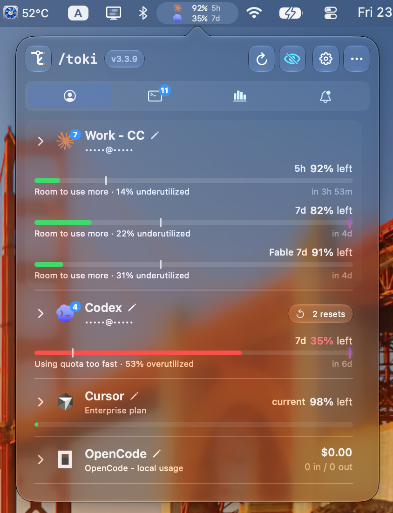

01 / THE WHOLE PICTURE
Your limits.
Your limits.
Without the guesswork.
Live quotas for Claude Code and Codex. Spend tracking for Cursor and more. See what's left before you hit a wall.
Explore supported tools